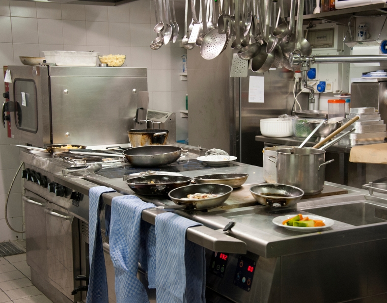

Rasakan Pedasnya Seblak Autentik!
Warung Seblak Bu Imah: Tempatnya cita rasa Bandung yang modern dan berkelas.
Tentang Kami
Warung Seblak Bu Imah adalah destinasi utama untuk menikmati seblak autentik ala Bandung dengan sentuhan modern. Kami menggunakan bahan segar berkualitas tinggi, resep turun-temurun, dan teknik memasak inovatif untuk menghadirkan rasa pedas yang menggugah selera. Seperti restoran berkelas, kami fokus pada pengalaman pelanggan yang nyaman dan stylish – dari suasana hingga penyajian. Bergabunglah dengan ribuan pelanggan puas yang telah merasakan kelezatan seblak kami!
Menu Unggulan Kami

Seblak Original
Seblak klasik dengan kerupuk basah, telur, dan bumbu pedas khas Bandung.
Rp 25.000
Seblak Seafood
Tambahan udang dan cumi segar untuk sensasi laut yang pedas dan gurih.
Rp 35.000
Seblak Vegetarian
Varian sehat dengan jamur, tahu, dan sayuran organik.
Rp 22.000Tim Kami
Bu Imah
Founder & Head Chef – Ahli resep tradisional dengan pengalaman 20 tahun.
Chef Ahmad
Sous Chef – Spesialis inovasi rasa pedas modern.
Dapur Kami
Dapur kami dirancang dengan standar internasional: higienis, efisien, dan dilengkapi peralatan canggih. Setiap hidangan disiapkan dengan cinta dan presisi untuk menjamin kualitas terbaik, seperti di restoran bintang lima.
Temukan Kami
Jl. Raya Bandung No. 123, Bandung, Jawa Barat. Buka setiap hari pukul 10:00 - 22:00.
Buka di Google Maps